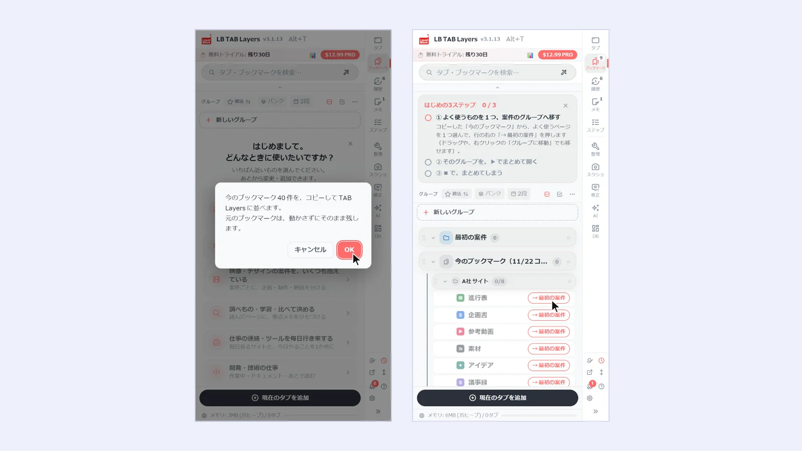
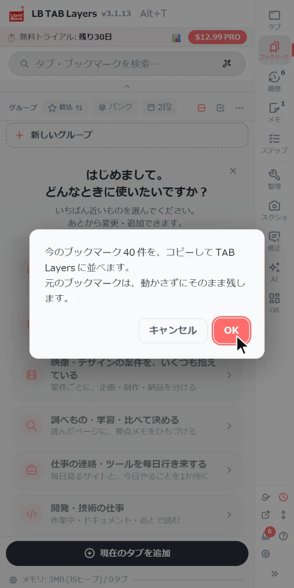
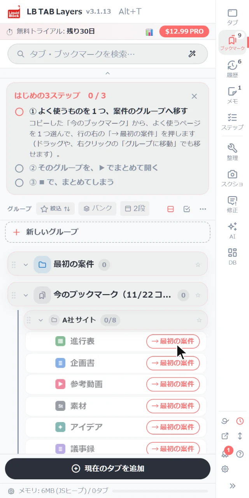
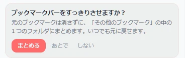

LB TAB Layers v3.1.13 の主な変更は、①入れた直後に今のブックマークをコピーして始められる（元のブックマークはそのまま）、②はじめの 3 ステップが「→ 最初の案件」で 1 つ移す → ▶ → ■ になった、③使い慣れたころに、元のブックマークを 1 つのフォルダに片づける案内が出る（消さない・いつでも元に戻せる）、の 3 つです。ほかに、たくさんのタブをまとめて開く前の確かめ、お祝いの表示が下のボタンや知らせに重ならないようにする直し、イタリア語・トルコ語・オランダ語の言い方を Chrome に合わせる直しを行いました。
LB TAB Layers の v3.1.13 を、Chrome ウェブストアで配信しています。今回のテーマは「今のブックマークから、すぐ始める」です。入れた直後の画面が空っぽだと、何から手をつければいいか分かりにくい。そこで、いつも使っているブックマークをそのまま並べて、そこから整理を始められるようにしました。
Chrome は拡張機能を自動で更新するので、ほとんどの方は何もしなくても新しい版になります。すぐに更新したいときは、chrome://extensions を開き、右上のデベロッパー モードをオンにして「更新」を押してください。LB TAB Layers の欄に版の番号が出ます。
v3.1.13 の変更点一覧
| 変更 | 内容 | プラン |
|---|---|---|
| 今のブックマークをコピーして始める | 入れた直後の「今のブックマークから始める（おすすめ）」で、Chrome のブックマークをコピーして並べる。元のブックマークは動かさない | 無料 |
| はじめの 3 ステップ | コピーから始めた人は「1 つ移す → ▶ で開く → ■ でしまう」。行の「→ 最初の案件」を押すだけで移せる | 無料 |
| 数が多いときの仕分け | コピーしたブックマークが 200 件以上なら、大きな画面（ダッシュボード）での仕分けをすすめる | PRO版／トライアル中 |
| 元のブックマークの片づけ | 使い慣れたころに、元のブックマークを 1 つのフォルダにまとめる案内。消さない・いつでも元に戻せる | 無料 |
| たくさんのタブを開く前の確かめ | ▶ で 20 個より多いタブを開くときは、開く前に数を確かめる | 無料 |
| お祝いの表示 | 下の「現在のタブを追加」や知らせに重ならないように。はじめの 3 ステップの途中は、別のことをすすめない | 無料 |
| 言葉の直し | イタリア語・トルコ語・オランダ語の「ブックマーク」の言い方を、Chrome の画面に合わせた | 無料 |
① 今のブックマークを、コピーして始める
入れた直後に出る「どんなときに使いたいですか？」の、いちばん上の「今のブックマークから始める（おすすめ）」を押すと、コピーするブックマークの数が出ます。「OK」を押すと、Chrome のブックマークがコピーされて、サイドパネルに並びます。

- 元のブックマークは動かしません。ブックマークバーもフォルダも、そのままです。「入れたらブックマークが消えた」ということは起きません
- コピーしたものは、Chrome のブックマークの「LB TAB Layers」フォルダの中に、「今のブックマーク（日付 コピー）」という置き場としてまとまります
- ブックマークバーなどのいちばん上の階層のフォルダは、置き場の中のサブグループになります。それより深いフォルダの中身は、そのサブグループにまとめて入ります（グループは 2 段までのため）
- ブックマークレット（
javascript:で始まるもの）は、タブで開けないのでコピーしません - 置き場は、無料版のグループの数（5 つまで）に数えません。置き場から自分のグループへ移したものだけが数に入ります
- 数が多くても、多くは数秒で終わります。途中の「やめる」で止めることもでき、そこまでのコピーは残ります
② はじめの 3 ステップは「1 つ移す → ▶ → ■」
コピーから始めた人には、上に「はじめの3ステップ」のカードが出ます。
- よく使うものを 1 つ、案件のグループへ移す — 置き場の行の右に出る「→ 最初の案件」を押すだけです。行の左の ⋮⋮ をつかんでドラッグしたり、右クリックの「グループに移動」を使ったりしても移せます
- そのグループを ▶ でまとめて開く
- ■ で、まとめてしまう

「→ 最初の案件」のボタンは、① のあいだだけ出ます。1 つ移すと消えて、② に進みます。ボタンが出ているあいだは、行の右端の小さなボタン（★など）を隠して、押し間違えないようにしています。
コピーしたブックマークが 200 件以上あるときは、カードに「大きな画面（ダッシュボード）で仕分ける」ボタンも出ます。ボードなら、カードからカードへドラッグして、たくさんのページをまとめて仕分けられます（ダッシュボードは PRO版／トライアル中の機能です）。
③ 元のブックマークを、1 つのフォルダに片づける
コピーして始めると、Chrome の中には元のブックマークとコピーの両方が残ります。使い慣れて、元のブックマークを見なくなったころに、置き場の上に次のような案内が1 回だけ出ます。

- すぐには出しません。コピーしてから 7 日以上たち、そのあと 3 日以上使い、置き場から 10 件以上を仕分けたときに出ます。入れてすぐ「元を片づけますか？」と聞かれると、不安になるためです
- 消しません。「まとめる」を押すと、ブックマークバーと「その他のブックマーク」にあるものを、「その他のブックマーク」の中の「片づけたブックマーク（日付）」というフォルダへ移すだけです。LB TAB Layers のフォルダは動かしません
- いつでも元に戻せます。まとめた直後の知らせの「元に戻す」か、置き場の右クリックの「片づけたブックマークを元に戻す」で、元の場所と順番に戻ります
- 「あとで」を押すと 14 日後にもう一度、「しない」を押すともう出ません。待たずに片づけたいときは、置き場の右クリックの「元のブックマークを片づける…」からできます
④ そのほかの直し
- たくさんのタブを開く前の確かめ — グループの ▶ で 20 個より多いタブを開くときは、「○個のタブを開きます。よろしいですか？」と確かめてから開きます。大きなフォルダを押してしまっても、一度にたくさん開いて Chrome が重くなることを防げます
- お祝いの表示 — 機能を初めて使ったときのお祝いが、下の「現在のタブを追加」や知らせに重なって、大事な案内が読めないことがありました。お祝いは一番下、知らせはその上に出るようにしました。はじめの 3 ステップの途中は、お祝いで別のことをすすめないようにしています
- コピーしただけでは、メダルを取らない — コピーしたブックマークの数で「ブックマーク 100 個」などのメダルが一度に出ていたのを直しました。置き場から自分のグループへ移した分だけを数えます
- 長い知らせが切れない — 「元に戻す」が付いた知らせの文が長いとき、途中で切れていたのを、折り返すようにしました
- 言葉の直し — イタリア語・トルコ語・オランダ語で、「ブックマーク」の言い方を Chrome 自身の画面に合わせました（イタリア語 preferiti・トルコ語 yer işaretleri・オランダ語 bookmarks）
いま使っている方へ
いつもの画面やグループは、そのままです。コピーして始める流れは、入れた直後の歓迎画面からの始め方です。すでにグループを作っている方の画面が変わることはありません。
よくある質問
Q. コピーして始めると、元のブックマークは消えますか？
消えません。元のブックマークは動かさず、そのまま残ります。コピーは Chrome のブックマークの「LB TAB Layers」フォルダの中に「今のブックマーク（日付 コピー）」としてまとまります。
Q. 同じブックマークが 2 つになりませんか？
なります。元のブックマークとコピーの両方が Chrome に残ります。使い慣れたころに、元のブックマークを 1 つのフォルダにまとめる案内が出るので、そこで片づけられます（消さずに移すだけで、いつでも元に戻せます）。
Q. 置き場は、無料版のグループの数に入りますか？
入りません。無料版はグループ 5 つまでですが、置き場とその中のサブグループは数えません。置き場から自分のグループへ移したものだけが数に入ります。
Q. 片づけの案内は、いつ出ますか？
コピーしてから 7 日以上たち、そのあと 3 日以上使い、置き場から 10 件以上を仕分けたときに、1 回だけ出ます。待たずに片づけたいときは、置き場を右クリックして「元のブックマークを片づける…」を選んでください。
Q. 新しい機能は無料で使えますか？
コピーして始める流れ、はじめの 3 ステップ、元のブックマークの片づけ、タブを開く前の確かめは、無料版で使えます。数が多いときにすすめるダッシュボードは、PRO版とトライアル中の機能です。
▶ 実際の操作を動画で見る
サイドバーで、ブックマークとタブをいっしょに管理する様子です。
今のブックマークから、すぐ始める。
元のブックマークはそのまま、コピーして並べるだけ。アカウント登録なし · 保存先は Chrome のブックマーク · 30日間すべての機能を無料で
Chrome に無料で追加 →